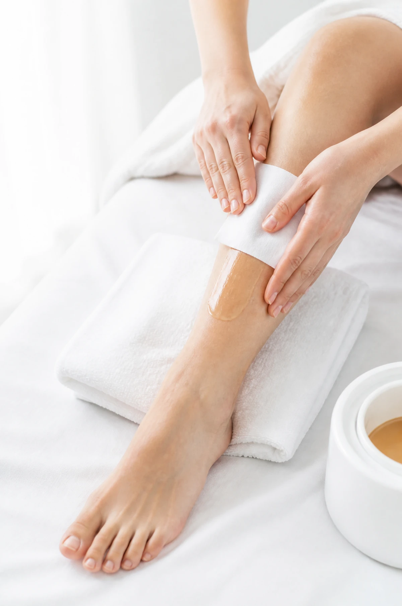
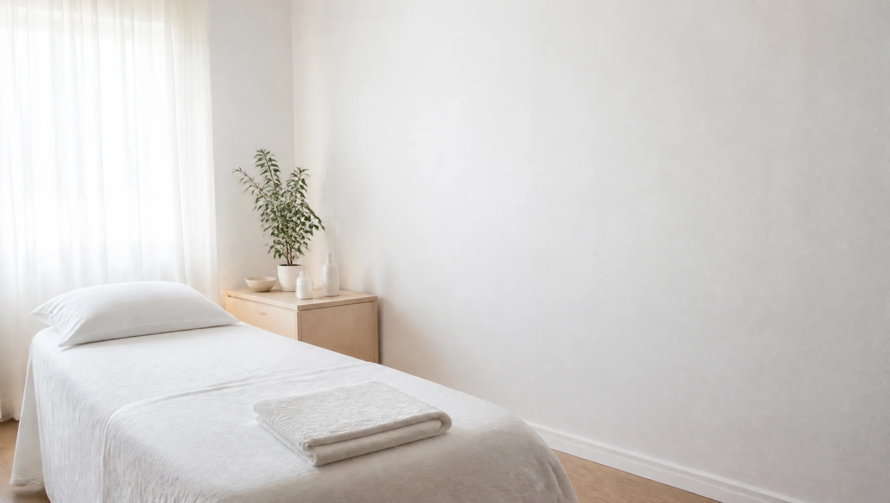
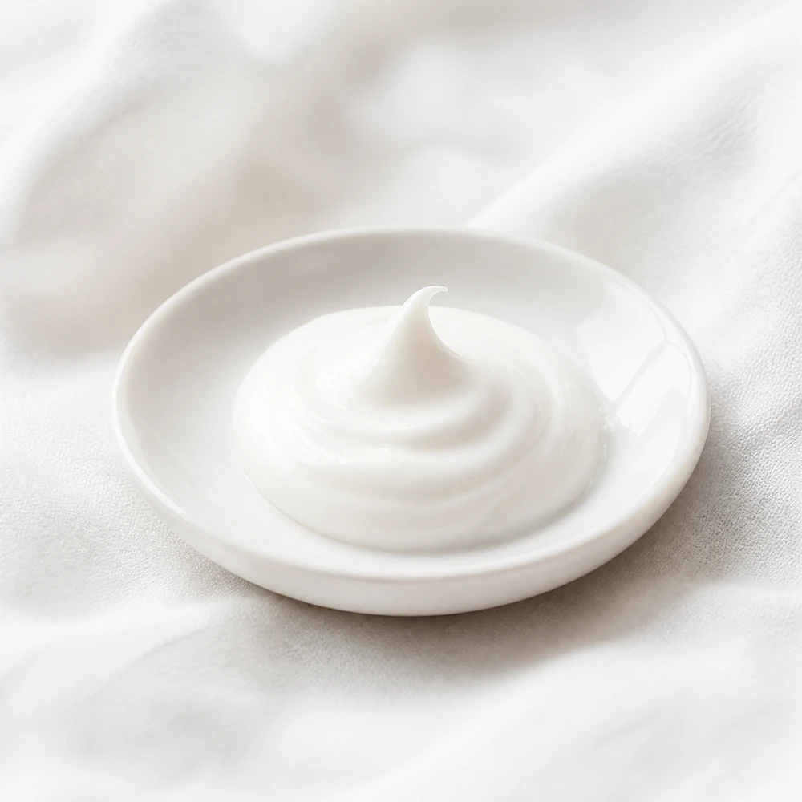
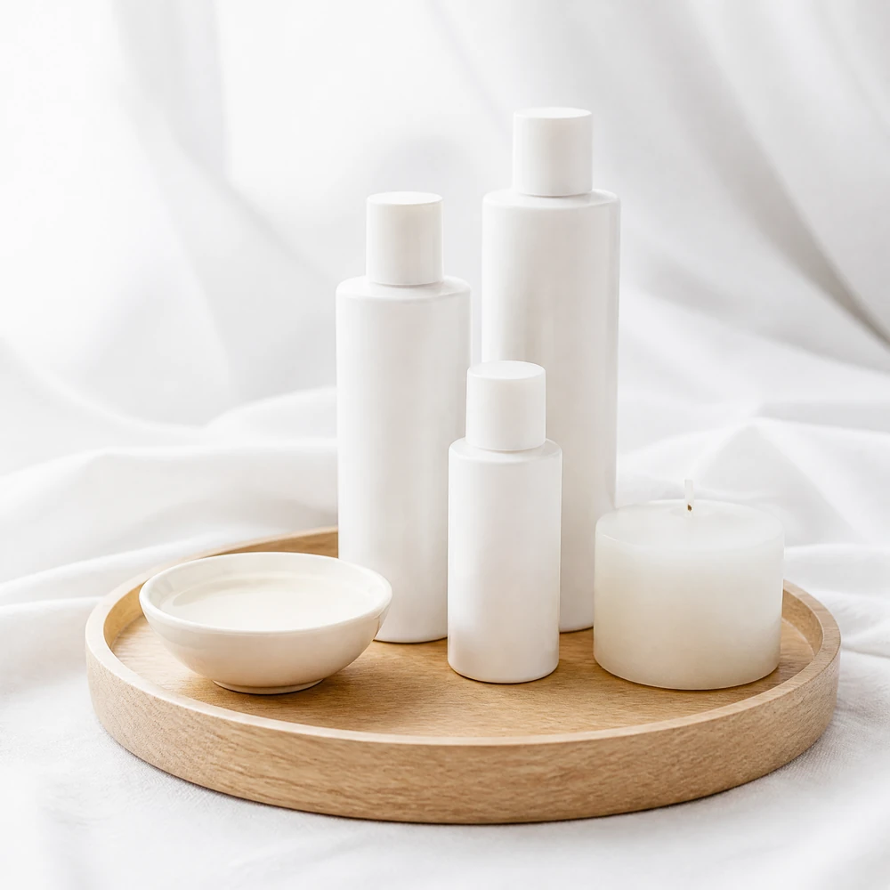
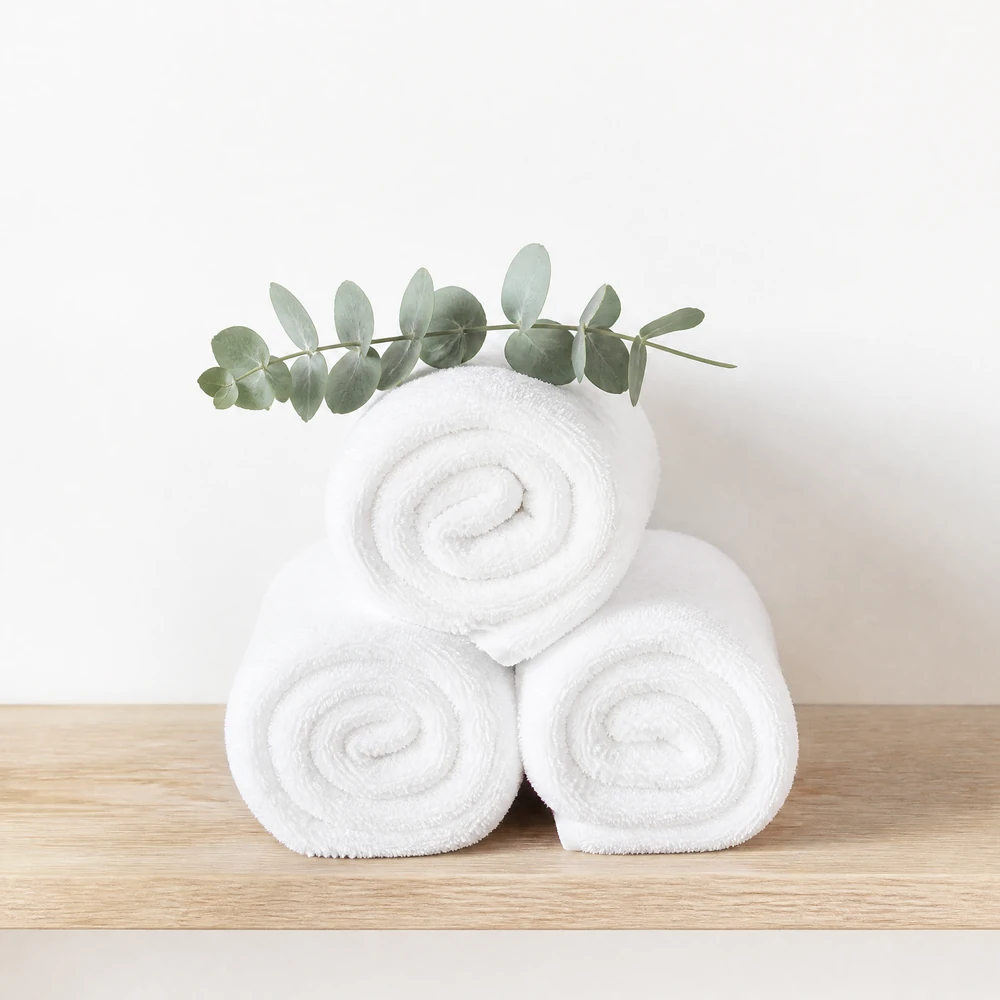

Facial
Limpieza, mascarilla y masaje según tu piel, no según la carta. Sin aparatos que hagan ruido.
desde 45 €Centro de estética · Pamplona
Faciales, masajes y depilación en un centro pequeño y silencioso, con una sola cabina y una sola persona a la vez.
Reserva tu cita01
Entras con la semana encima. Sales con la piel descansada, los hombros sueltos y una hora que ha sido solo tuya.
Lo que hacemos
Limpieza, mascarilla y masaje según tu piel, no según la carta. Sin aparatos que hagan ruido.
desde 45 €Relajante o descontracturante, de cuello a pies o solo la espalda. Con aceite tibio y manos que no tienen prisa.
desde 40 €
Cera tibia de baja temperatura y poco dolor. Piernas, axilas, ingles y cara, con bandas limpias para cada persona.
desde 12 €Diseño de ceja con pinza, tinte y laminado. Lo justo para que la mirada se vea despejada y nadie sepa por qué.
desde 15 €El espacio

Una cabina con ventana y cortina de lino. La luz llega filtrada y se baja un poco más cuando empieza el tratamiento.
Una sola cabina y nadie esperando al otro lado de la puerta. Sin música de fondo, salvo que la pidas.
Toallas que se lavan cada día, cera nueva para cada persona y productos sin perfume añadido.
Sin ruido



La piel se nota. La prisa también.
Detrás de Pausa
Quince años en cabina, los últimos seis en este local de San Juan. Se formó en Donostia, volvió a Pamplona y abrió Pausa con una idea: una cabina sola y nadie esperando.
Trabaja con cita, con una persona a la vez, y la hora es la hora: ni empieza tarde ni termina antes.
Salí del facial con la piel como después de dormir diez horas.Irati, clienta desde 2024
La depilación con cera tibia duele la mitad. Y no hay nadie esperando en la puerta.Lorea, clienta desde 2023
Fui por un masaje que me regalaron y ahora me lo regalo yo cada mes.Amaia, clienta desde 2025
Escríbenos por WhatsApp y te decimos hueco en la semana. Sin registros ni aplicaciones.
Escribir por WhatsApp Pausa · Calle de San Juan, 00 · Pamplona · 600 000 000